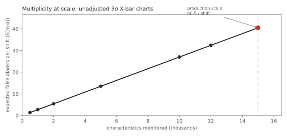
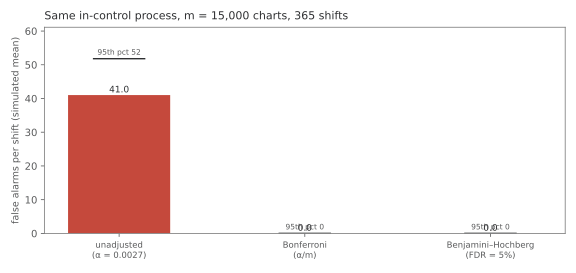
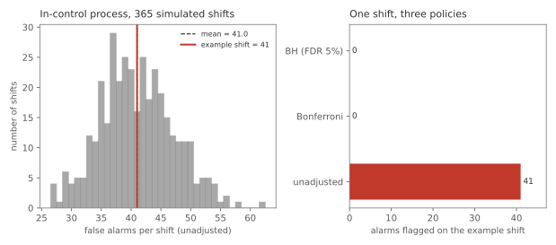

An SPC platform monitoring ~15,000 measured characteristics in a semiconductor assembly & test (OSAT) line will flag dozens of X-bar charts every shift even when every process is in control. That is not drift, tool wear, or a regression in the software. It is arithmetic. This study counts the false alarms, compares three ways a plant might respond, and argues the family of tests — not each chart in isolation — is the honest unit of inference.
Monte Carlo simulation with a fixed seed. No production data, part numbers, or customer names. The scale and the per-chart α match a real platform; the alarms are synthetic Bernoulli draws representing in-control 3σ limits.
Each characteristic runs an X-bar chart with control limits set so that, if the process is stable and the within-subgroup distribution is well behaved, the chance of a false alarm on any one subgroup is about α = 0.0027 (the usual 3-sigma convention). That is fine for a single chart. It is not fine for a platform running the same test on 15,000 characteristics every shift.
The expected number of false alarms per evaluation is simply E = m · α. At
production scale that is 15,000 × 0.0027 = 40.5. The probability of seeing at least
one false alarm is 1 − (1 − α)m, which is already ~99.97% at
m = 2,000 and rounds to 100% at 15,000. The platform is working as designed; the
meeting is drowning anyway.

Run the same null process for 365 shifts with m = 15,000 charts and compare three policies:
| Policy | Per-chart threshold | Mean false alarms / shift | 95th percentile |
|---|---|---|---|
| Unadjusted 3σ | α = 0.0027 | 41.0 | 51 |
| Bonferroni (FWER) | α/m ≈ 1.8×10−7 | 0.01 | 0 |
| Benjamini–Hochberg (FDR 5%) | rank-adjusted on p-values | 0.0 | 0 |
The unadjusted policy generates a full shift's worth of investigations from noise alone. Bonferroni restores family-wise control at the cost of per-chart sensitivity so strict it is impractical to ever see a single alarm under the null. BH, applied shift-wide to the batch of chart p-values, rejects nothing here — which is the correct answer when every firing chart is a null draw.

Pick a shift near the median of the unadjusted simulation: 41 charts alarm. Under Bonferroni, 0 would have cleared the stricter gate; under BH, 0 are called discoveries. An operator chasing the raw list investigates forty-one characteristics; a engineer who reads the batch sees one systemic pattern — "the family fired, nothing assignable" — and does not burn the shift on phantom fires.
This is the signature to learn: many charts, one shift, no matching equipment event. That profile is what multiplicity looks like on the floor. A single chart firing alone still deserves a root-cause walk; forty firing together on an in-control day is a different hypothesis test.

• Batch alarms by shift, not by chart. The first question when the alarm board fills is
"how many, and is there a common cause?" — not "investigate every red box in row order."
• Explicit family-wise logic for high-m dashboards. At 15,000 characteristics, some form of
multiplicity control (Bonferroni for strict FWER, BH when you can tolerate a controlled false-discovery
rate) is not optional statistics — it is workload management.
• Do not confuse capability rebasing with alarm policy. Study 02 showed the overall-σ gate
should flag more real drift; this study shows the X-bar alarm layer will flag more false
positives unless the family is handled. Both can be true.
Independence across charts is an approximation: correlated characteristics would co-fire and
can look like a systemic event even when real. This simulation uses independent Bernoulli alarms
at fixed α — a clean upper bound on the "noise-only" story. Real run rules, autocorrelation, and
non-normal tails change the per-chart α; the scaling law E = m·α does not.